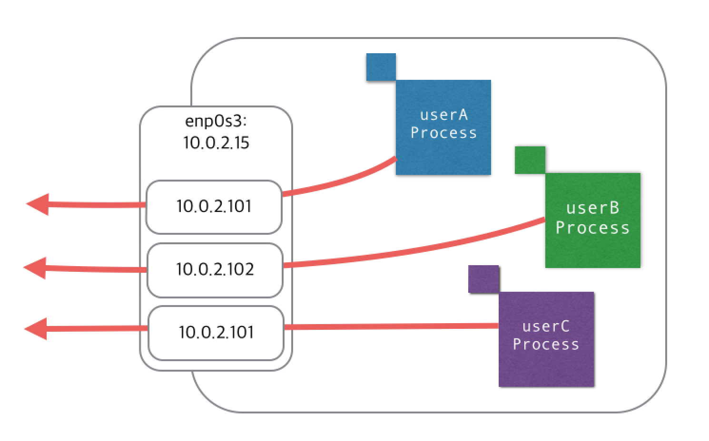

外部へ通信時のソースIP をユーザごとに変更する
「ユーザ単位で、通信時に使用するソースIP を指定できないか？」って話があって、cgroup や fwmark とか使えばできるんじゃない？って思ってたけど、iptables だけであっさりできたって話。
こんな感じで、サーバ上のプロセスが外部へ通信を行う際に、ユーザごとに別々のソースIP になってほしいって要件。

上の例ではプライベートIP を使用しているが、利用時の想定はグローバルIP (IPマスカレードされたら意味なし :-P)。
環境
いつものごとく vagrant で。
- CentOS 7.1 (3.10.0-229.el7.x86_64)
手順
いろいろ面倒くさそうな手順を考えていたが、よく考えると iptables だけであっさり対応できる。上記画像のような環境を構築する手順。
ユーザを追加
12345678# useradd userA# useradd userB# useradd userC## tail -3 /etc/passwduserA:x:1001:1001::/home/userA:/bin/bashuserB:x:1002:1002::/home/userB:/bin/bashuserC:x:1003:1003::/home/userC:/bin/bashIP の追加
指定するソースIP をサーバに追加。1234567891011121314151617# ip addr add 10.0.2.101/24 dev enp0s3# ip addr add 10.0.2.102/24 dev enp0s3# ip addr add 10.0.2.103/24 dev enp0s3## ip a s enp0s32: enp0s3: <BROADCAST,MULTICAST,UP,LOWER_UP> mtu 1500 qdisc pfifo_fast state UP qlen 1000link/ether 08:00:27:ea:9b:b5 brd ff:ff:ff:ff:ff:ffinet 10.0.2.15/24 brd 10.0.2.255 scope global dynamic enp0s3valid_lft 84388sec preferred_lft 84388secinet 10.0.2.101/24 scope global secondary enp0s3valid_lft forever preferred_lft foreverinet 10.0.2.102/24 scope global secondary enp0s3valid_lft forever preferred_lft foreverinet 10.0.2.103/24 scope global secondary enp0s3valid_lft forever preferred_lft foreverinet6 fe80::a00:27ff:feea:9bb5/64 scope linkvalid_lft forever preferred_lft foreverSNAT の追加
owner モジュールを使用して、ユーザごとに SNAT (ソースIPの書き換え)を行う12345678910111213141516171819# iptables -t nat -A POSTROUTING -m owner --uid-owner userA -j SNAT --to-source 10.0.2.101# iptables -t nat -A POSTROUTING -m owner --uid-owner userB -j SNAT --to-source 10.0.2.102# iptables -t nat -A POSTROUTING -m owner --uid-owner userC -j SNAT --to-source 10.0.2.103## iptables -t nat -nvLChain PREROUTING (policy ACCEPT 2 packets, 620 bytes)pkts bytes target prot opt in out source destinationChain INPUT (policy ACCEPT 1 packets, 44 bytes)pkts bytes target prot opt in out source destinationChain OUTPUT (policy ACCEPT 24 packets, 1805 bytes)pkts bytes target prot opt in out source destinationChain POSTROUTING (policy ACCEPT 17 packets, 1262 bytes)pkts bytes target prot opt in out source destination0 0 SNAT all -- * * 0.0.0.0/0 0.0.0.0/0 owner UID match 1001 to:10.0.2.1010 0 SNAT all -- * * 0.0.0.0/0 0.0.0.0/0 owner UID match 1002 to:10.0.2.1020 0 SNAT all -- * * 0.0.0.0/0 0.0.0.0/0 owner UID match 1003 to:10.0.2.103
検証
userB で ping を打った際の tcpdump
|
|
|
|
ちゃんと userB のソースIP は 10.0.2.102 になっている。